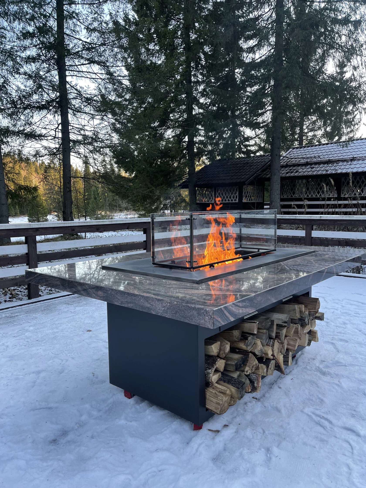
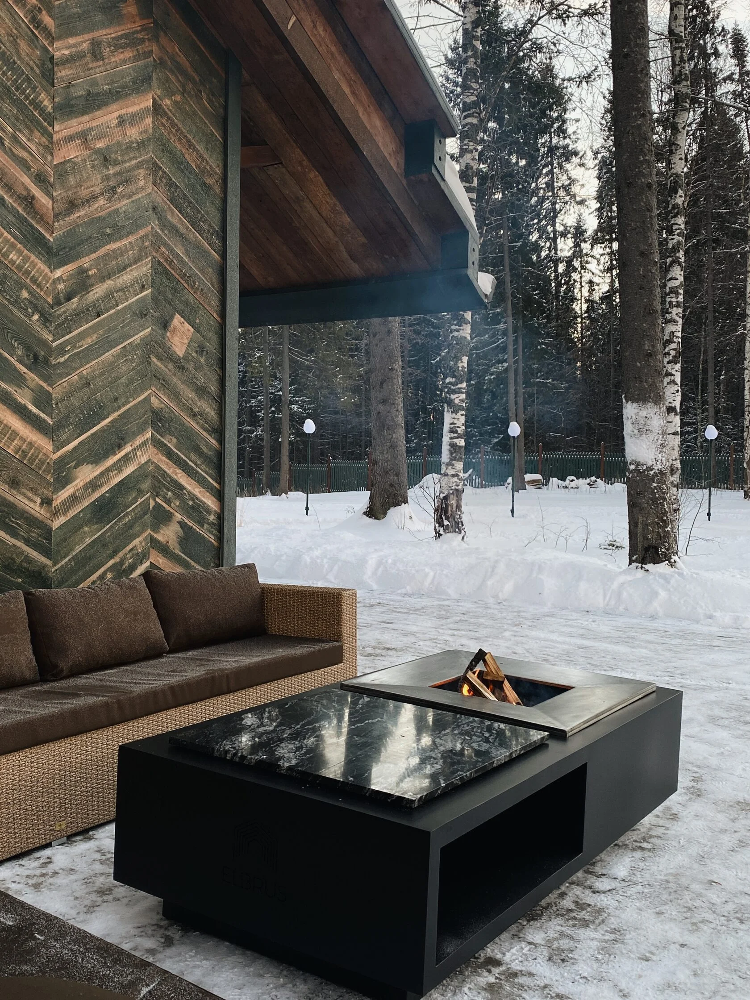
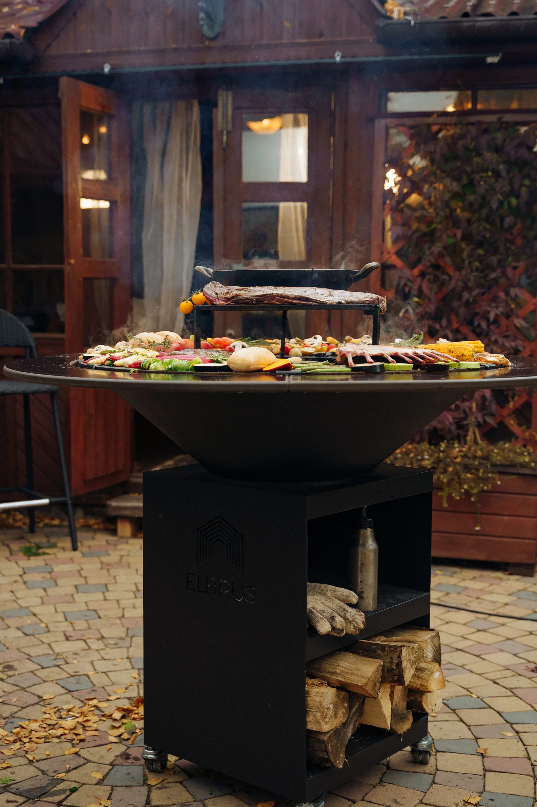
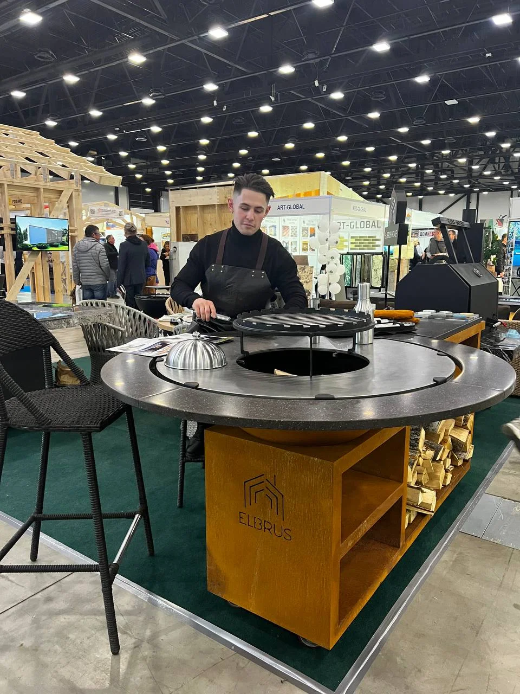

Кейс // 003
ELBRUS HOME:
ИССЛЕДОВАНИЕ РЫНКА ОАЭ
О ПРОЕКТЕ
ELBRUS HOME — российский производитель премиальных дровяных очагов с философией «социального очага», объединяющего людей. Клиент поставил задачу провести исследование и подготовить рекомендации по выходу на рынок Объединенных Арабских Эмиратов. Вместо заказа классического и долгого маркетингового исследования у консалтинговых агентств, клиент доверил эту задачу нашим автономным аналитическим системам.
ЗАДАЧА
Рынок ОАЭ — это сложный ландшафт с закрытыми комьюнити, строгими правилами застройщиков и специфическим климатом. Клиенту требовались не абстрактные демографические данные, а точные ответы: кто формирует культуру загородной жизни, какие существуют легальные барьеры и как позиционировать продукт. Традиционный desk research занял бы месяцы. Нам нужно было собрать, структурировать и проанализировать реальный цифровой след рынка за несколько дней.





РЕШЕНИЕ
NEIROFACTURA развернула кластер агентов-исследователей (Deep Research), каждый из которых отвечал за свой слой данных:
Парсинг и транскрибация. Агенты спарсили десятки профильных Instagram-аккаунтов. Система автоматически транскрибировала Reels, анализировала визуальный ряд и текстовые описания, высчитывая реальный Engagement Rate (ER).
Поиск аномалий и графовый анализ. ИИ выявил скрытые связи между аккаунтами и обнаружил «Голубой океан» — пропасть между премиальным дизайном (с ER 0.05-0.98%, где нет людей) и живой культурой барбекю (с ER до 4%, но со слабой эстетикой).
Риск-менеджмент и мониторинг форумов. Агенты проанализировали закрытые чаты экспатов и правила застройщиков. Был выявлен критический инсайт: климат ОАЭ не позволит кортеновской стали правильно патинироваться. Система уберегла клиента от фатальной ошибки, обосновав необходимость выпуска специальной модификации под местный климат.
Сбор и структурирование B2B-базы. Параллельно с аналитикой агенты провели масштабный дата-скрапинг. Вся неструктурированная информация была очищена, верифицирована и собрана в единую базу лидов по 7 стратегическим категориям: ритейлеры, инфлюенсеры, ландшафтные бюро, агентства недвижимости, целевые поселки, локальные производители и потенциальные партнеры. Клиент получил не просто отчет, а готовую CRM-инфраструктуру для старта продаж.
Парсинг и транскрибация. Агенты спарсили десятки профильных Instagram-аккаунтов. Система автоматически транскрибировала Reels, анализировала визуальный ряд и текстовые описания, высчитывая реальный Engagement Rate (ER).
Поиск аномалий и графовый анализ. ИИ выявил скрытые связи между аккаунтами и обнаружил «Голубой океан» — пропасть между премиальным дизайном (с ER 0.05-0.98%, где нет людей) и живой культурой барбекю (с ER до 4%, но со слабой эстетикой).
Риск-менеджмент и мониторинг форумов. Агенты проанализировали закрытые чаты экспатов и правила застройщиков. Был выявлен критический инсайт: климат ОАЭ не позволит кортеновской стали правильно патинироваться. Система уберегла клиента от фатальной ошибки, обосновав необходимость выпуска специальной модификации под местный климат.
Сбор и структурирование B2B-базы. Параллельно с аналитикой агенты провели масштабный дата-скрапинг. Вся неструктурированная информация была очищена, верифицирована и собрана в единую базу лидов по 7 стратегическим категориям: ритейлеры, инфлюенсеры, ландшафтные бюро, агентства недвижимости, целевые поселки, локальные производители и потенциальные партнеры. Клиент получил не просто отчет, а готовую CRM-инфраструктуру для старта продаж.
РЕЗУЛЬТАТЫ
Использование ИИ-агентов позволило создать стратегический документ хирургической точности. Клиент получил не просто «отчет», а пошаговый roadmap с базой инфлюенсеров, списком дилеров и готовым продуктовым пивотом под климат ОАЭ.
5 ДНЕЙ
На исследование и отчет
350+
Проанализированных источников
INSIGHT
Важнейший выявленный тезис по локализации продукта